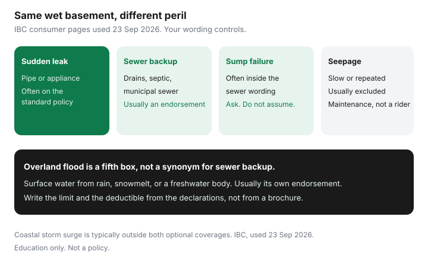

Insurance · Canada
Water Damage vs Sewer Backup Endorsements in Canada: What Standard Home Policies Miss
A burst pipe and a sewer that backs up through the basement floor drain are both “water.” On a Canadian home policy they are usually different perils, with different deductibles and different yes-or-no answers. Households finish a basement, skip the sewer-backup endorsement because the premium looked optional, and then discover the standard wording never promised to pay for that loss. Insurance Bureau of Canada consumer pages are consistent on the split: sudden internal escape is the usual covered water story; sewer backup and overland flood are typically optional.
This page is the endorsement map. It does not re-teach how to shop a whole home policy, how to raise the all-perils deductible, or how condo corporation deductibles work. Those guides are linked. Read your declarations beside this map. Wording names differ by insurer. There is no single national form.
Disclosure: Home-insurance quote flows and broker quote portals are offer types. Saving Optimizer may earn a commission if we later add partner links. We do not currently claim insurer or broker partnerships. We do not sell policies. Education only. IBC descriptions used 23 Sep 2026.
Key takeaways
- Sudden escape from plumbing, an appliance, or a water main is the water loss a standard policy often covers. Sewer backup, sump failure, seepage, and overland flood usually are not.
- The declarations page has to name the endorsement, the limit, and the deductible. A “water bundle” slogan is not a limit.
- Sewer-backup deductibles are often separate, and a finished basement can cost more to restore than a low sub-limit.
- Backwater valves and sump alarms are mitigation. Ask whether the insurer wants proof. Do not invent a discount percentage.
- After a near-miss, add the endorsement before the next spring melt. A claim on an excluded peril does not create coverage backwards.
Map sudden internal water vs sewer backup vs sump failure vs seepage exclusions
IBC’s flood-and-water pages say a home policy typically covers sudden or accidental water damage from indoor plumbing, heating, or air conditioning, and from appliances such as washers — usually not the repair of the appliance itself — and water entering through a roof opening. The same pages say damage from sewers and drains backing up is typically not covered unless you buy optional sewer backup, and overland flooding is typically not covered unless you buy that optional coverage. Coastal storm surge is typically outside both. Continuous seepage and poor maintenance (including frozen pipes you allowed by turning the heat off) are the other usual “no.”
| What happened | Typical standard wording | What to ask for |
|---|---|---|
| Supply line or washing-machine hose lets go, suddenly | Often covered as escape of water | Confirm freezing exclusions and vacancy rules. The hose itself may not be covered. |
| Water main break affecting the home | Often covered when the wording names a water main | Ask. Do not assume a municipal main and a private line are the same grant of coverage. |
| Sewer, storm drain, or septic backs up into the house | Typically excluded | Sewer-backup endorsement. Read whether “drain” and “septic” are in the definition. |
| Sump pump fails or is overwhelmed | Often excluded with sewer backup, sometimes separate | Ask if sump failure is inside the sewer endorsement or needs its own grant. A pump without a backup is a mitigation issue either way. |
| Slow seepage through walls or a repeating leak | Typically excluded as continuous or repeated seepage, or as maintenance | This is not fixed by buying sewer backup. Fix the building. |
| Rain or river water enters at or above grade | Typically excluded as overland flood | Overland endorsement. See whether that endorsement is worth it. Sewer backup does not buy it. |
| Groundwater or a rising water table through the foundation | Often excluded, even when overland is added | Ask. Some broadened water forms include it. Many do not. |

Read your declarations for water endorsement limits and sub-limits
The declarations page, not the brochure, is the contract summary. Find four lines and write them on the annual review sheet:
- The name of each water endorsement (sewer backup, overland water, ground water, service line — names vary).
- The limit. It may be the full dwelling limit, or a sub-limit such as a stated dollar cap on the basement.
- The deductible for that endorsement. It is often higher than the all-perils deductible. The deductible guide is the emergency-fund test; do not raise a water deductible you cannot write a cheque for.
- Whether contents and additional living expenses respond to that peril, or only the building.
A labelled reading, not a quote: all-perils deductible $1,000, sewer-backup deductible $2,500, sewer-backup limit $30,000, finished basement that would cost $45,000 to strip, dry, and rebuild. The gap is $15,000 plus the deductible, before you argue about contents. If your page shows a different limit, use yours. Insurers do not owe you the labelled sketch.
Condo owners: the corporation’s master policy and its water deductible are a different contract. A unit owner can be assessed for a share of a large water deductible. That problem is the condo deductible guide. Your unit endorsement still has to cover betterments and contents the corporation does not insure.
Sewer backup: typical deductibles, seasonal risks, and basement finishing traps
There is no national sewer-backup deductible. What recurs in Canadian wordings is a separate deductible, sometimes a percentage or a higher flat amount than fire and theft, and a limit that may not grow when you finish the basement. Spring melt and heavy summer storms are when municipal sewers surcharge. A house that was “dry for twenty years” can still back up when the street system is full. The endorsement is how you pay for that, if you bought it and if the cause matches the definition.
Finishing traps:
- Carpet, drywall, and built-in cabinets in a basement are expensive to tear out after sewage. Contents limits and replacement-cost wording matter. Actual cash value on older furnishings is the settlement-basis guide.
- If you renovated and did not tell the insurer, the limit may still describe an unfinished basement.
- A higher sewer deductible saves premium only if the emergency fund can pay it the same month. Otherwise you have redesigned the loss into a line of credit.
- Sewage is a cleanup problem with health rules in your municipality. Do not treat a cheap fan as a restoration plan. Insurers want invoices from people who actually dried the structure.
Mitigation credits: backwater valves, sump alarms, and documentation insurers want
A backwater valve is meant to stop municipal sewage from flowing back into the house. A sump pump with a battery backup and an alarm is meant to keep groundwater or drain water moving when the power fails. Neither device rewrites an exclusion. They can reduce how often you claim, and some insurers ask about them when they price sewer or water endorsements. Ask whether a discount exists and what proof they want: a plumber’s invoice, a photo of the valve, a municipal permit. Do not assume a percentage.
Some cities subsidize backwater valves or sump pumps. The dollar amount and the eligible postal codes are on the municipal page for this year, not in a national table. Toronto, for example, has run basement-flooding protection programs; eligibility changes. Check the city you pay taxes to. Keep the permit and the invoice with the insurance sheet. After a loss, “we meant to install it” is not mitigation.
Maintenance still matters. IBC notes that predictable or preventable events — a house on a known flood plain treated as if it were a surprise, or pipes frozen because the heat was turned off — are not what insurance is for. A valve full of debris is a maintenance item. Test it on the manufacturer’s schedule.
After a near-miss: how to add coverage before the next storm season
A backup that stopped at the floor drain and did not ruin the basement is a warning, not a claim you must file. Filing a zero-pay or small claim can still affect price later. The useful move is to add the endorsement before the next melt or storm season, while the insurer will still offer it.
- Photograph the drain, the valve, and the basement the way it is now, before a loss.
- Ask, in writing, to add sewer backup (and overland, as a separate question) at a limit that matches the finished space. Ask the deductible options.
- If the insurer declines because of a prior loss or a flood score, ask a broker to try another market. A decline at one company is not a national ban. High-risk locations can be declined widely. That is an eligibility fact, not an insult.
- Do not cancel the rest of the policy to chase a water endorsement. Bind the new wording first. The overlap rule is in the switching guide.
- Tell the insurer about the renovation if the basement changed. A limit based on an unfinished room will not grow because you hoped it would.
Claim prep: photos, moisture logs, and contractor invoices that speed settlement
If sewage or a burst pipe has already damaged the house, safety and stopping further damage come first. Then document. Adjusters settle faster when the file shows what was wet, for how long, and what it cost to dry.
- Photos and video before you discard flooring or drywall, if it is safe to be in the room. Include a measuring tape or a doorway so scale is obvious.
- Moisture readings from the restoration firm, dated. A “we dried it” invoice without readings invites an argument about mould that started later.
- Cause notes. Plumber or city crew describing backup versus a failed supply line. The peril name decides which deductible and which limit apply.
- Keep samples until the insurer says you may throw materials away, unless health requires immediate disposal. Write down who told you to dispose of them.
- Additional living expenses if the house is not livable and that coverage responds to the peril. Keep hotel and meal receipts. There is a limit and a time cap on the policy.
- Do not guess the peril on the first phone call. “The basement is wet” is enough to open a claim. The endorsement question comes after the cause is known.
IBC’s consumer information centre (1-844-227-5422) is a public line for general insurance questions after a disaster. It does not replace your insurer’s claims number, and it is not a partnership with this site.
Sources & date stamps
- Insurance Bureau of Canada, water damage and flood protection — sudden internal water typically covered; sewer backup and overland flood typically optional; storm surge typically not covered (used 23 Sep 2026).
- IBC, types of home coverage — sewer backup and overland water described as optional add-ons (used 23 Sep 2026).
- Canada.ca, overland flood insurance — flooding is not typically included in a standard policy; endorsements differ by type of water (used 23 Sep 2026).
Frequently asked questions
Does standard home insurance cover sewer backup in Canada?
Usually no. Insurance Bureau of Canada pages say a sudden leak from plumbing or an appliance is the water loss a standard policy often covers, and sewer backup is typically an optional endorsement. Your declarations page is the contract.
Is sump pump failure the same as sewer backup?
Often it is written inside the sewer endorsement, and sometimes it is not. Ask whether the definition includes a sump. Do not assume.
Why is a finished basement a coverage problem?
Sewage ruins drywall, flooring, and contents. A low sub-limit or a higher sewer deductible can leave a large gap. Tell the insurer when you finish the space so the limit describes the room you have.
What speeds up a water claim?
Photos before you discard materials, dated moisture readings, a note on the cause, and contractor invoices. Say the basement is wet when you open the claim. The peril name decides which deductible applies.
Is this insurance advice?
No. Education only. Home quote flows and broker portals are offer types. We do not claim an insurer partnership.